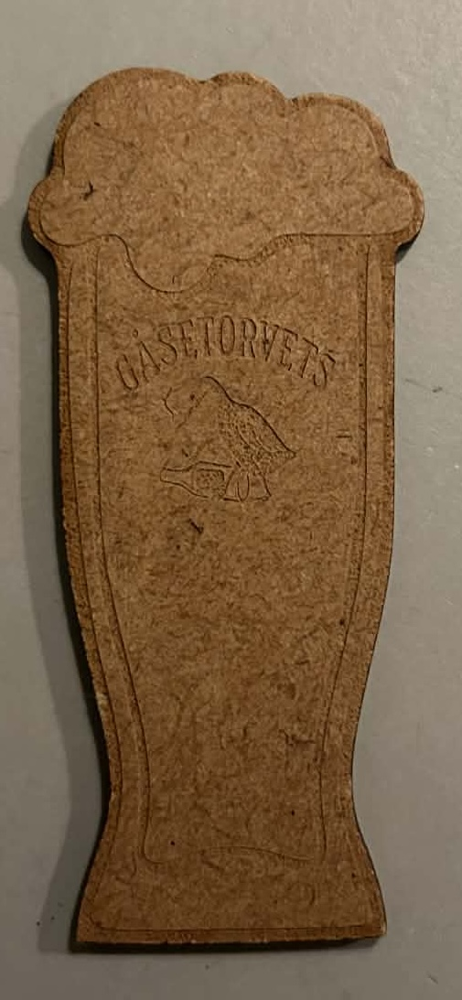
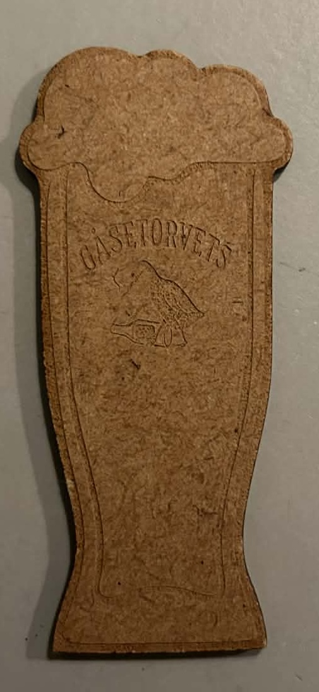
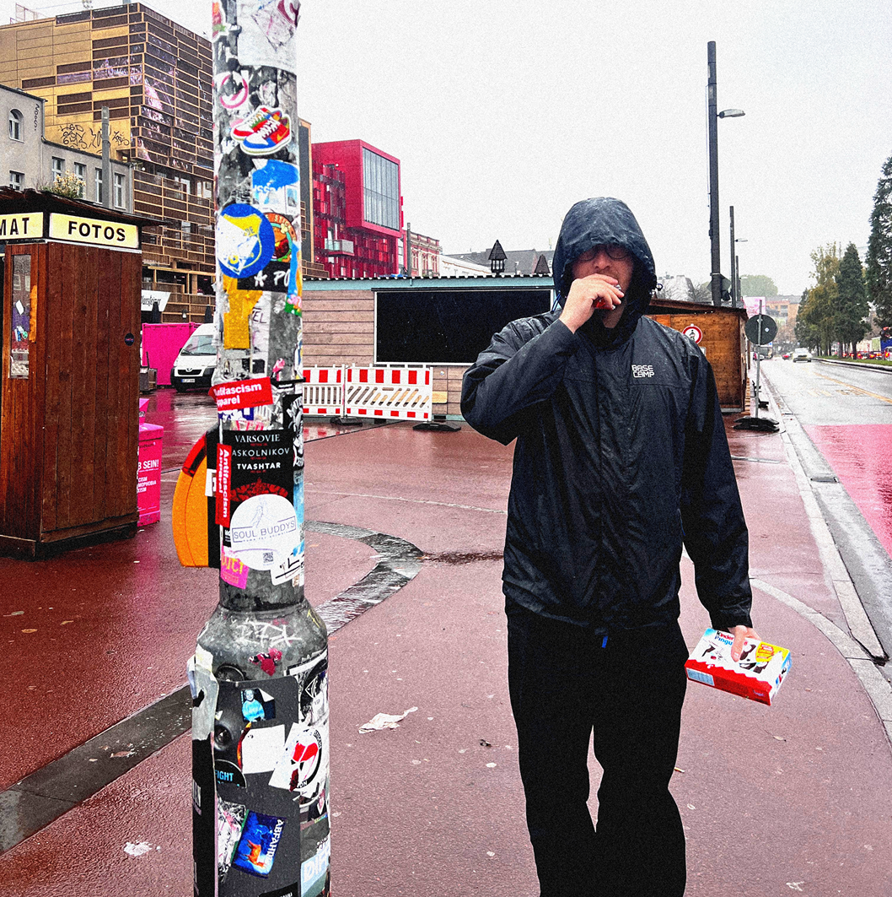
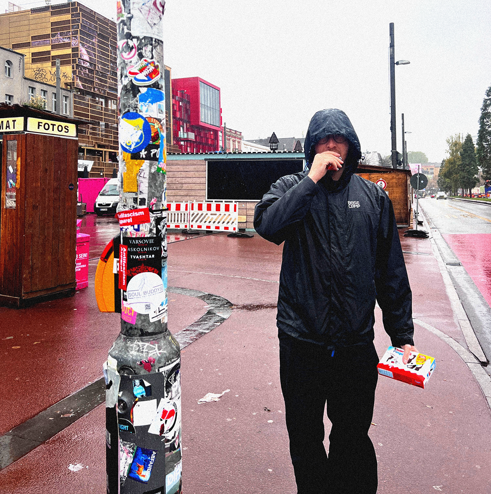

“Drik-status” er et igangværende samarbejde med Gåsetorvet, hvor målet
var at udvikle et unikt trædesign til et nyt drik-status-koncept,
inspireret af idéen fra Viggos.
Jeg har udarbejdet flere skitser og prototyper i forskellige former,
blandt andet ølglas og krus, alle med Gåsetorvets logo integreret i
linjerne. Designet er tænkt som et lille fysisk element, der både
fungerer som et sjovt samleobjekt og som en nøglering, gæsterne kan
tage med hjem.
Projektet er nu tæt på et færdigt design, og næste skridt er produktion.
Planen er at få skåret de første 500 stk. på en lasercutter, så baren
kan teste konceptet i praksis som en del af gæsteoplevelsen.

 


 
